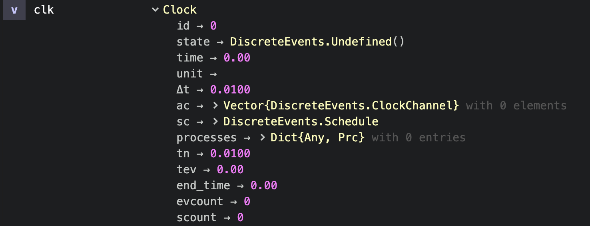

Clocks
In physics and most of life we measure time with a clock [1]. An event sequence Γ = {γ₁, γ₂, ...} has measured times t₁ < t₂ < ... From that we draw inferences about causality and dependencies.
In DiscreteEvents we turn this on its head: A Clock can register events and trigger them at given times or under given conditions. It doesn't measure time, it "is" time. We can create it, run it, stop time, run it for a while, step through time, skip from event to event, change event sequences … With it we can create, model or simulate discrete event systems (DES).
Virtual clocks
Virtual clocks are not constrained by any physical time measurement. They don't have to wait an hour for the next event to occur, but can right jump to it. Time is only a number and the computer executes an event sequence as fast as possible.
julia> using DiscreteEvents
julia> clk = Clock()
Clock 0, thrd 1 (+ 0 ac): state=DiscreteEvents.Undefined(), t=0.0 , Δt=0.01 , prc:0
scheduled ev:0, cev:0, sampl:0We created a new clock, running on thread 1, having time t=0.0, a sampling rate of Δt=0.01, no registered processes, no scheduled events, conditional events or sampling actions.
julia> run!(clk, 10)
"run! finished with 0 clock events, 0 sample steps, simulation time: 10.0"If we run the clock a duration Δt=10, it jumps immediately ahead since it has nothing to do.
Real time clocks
A real time clock RTClock is bound to the computer's clock and measures time in seconds [s]. We create and start it with createRTClock
julia> rtc = createRTClock(0.01, 99)
Real time clock 99 on thread 8: state=DiscreteEvents.Idle(), t=0.0001193 s, T=0.01 s, prc:0
scheduled ev:0, cev:0, sampl:0Here we have created an real time clock with id=99 and a clock resolution of T=0.01 s. It installed itself on thread 8. When the message was created, the clock had just advanced 0.0001193 s. When we query its time thereafter, it shows the time in seconds passed since startup:
julia> tau(rtc)
14.045107885001926
julia> rtc.time
17.910258978001366We can schedule events to real time clocks as to virtual clocks and they will execute at their due time.
Parallel clocks
Clock commands
Diagnosis
As usual in Julia you can access clock parameters by clock.parameter:
julia> clk # normally pretty printing is enabled
Clock 0, thread 1 (+ 0 ac): state=DiscreteEvents.Undefined(), t=0.0 , Δt=0.01 , prc:0
scheduled ev:0, cev:0, sampl:0
julia> clk. # with clk. + tab + tab you get the parameters
ac end_time evcount id processes sc scount state tev time tn unit Δt
julia> clk.time # then you can select one of them
0.0You can switch off pretty printing and then get the Julia Base.show_default:
julia> DiscreteEvents.prettyClock(false)
julia> clk
Clock(0, DiscreteEvents.Undefined(), 0.0, , 0.01, DiscreteEvents.ClockChannel[], DiscreteEvents.Schedule(DataStructures.PriorityQueue{DiscreteEvents.DiscreteEvent,Float64,Base.Order.ForwardOrdering}(), DiscreteEvents.DiscreteCond[], DiscreteEvents.Sample[]), Dict{Any,Prc}(), 0.01, 0.0, 0.0, 0, 0)In Atom's workspace then you can access the clock's structure for further diagnosis.

- sampling rate
- time units
to do
- 1In essence we count the number of naturally occuring periodic events to measure time: the revolution of a planet, our heart beat, the swing of a pendulum …